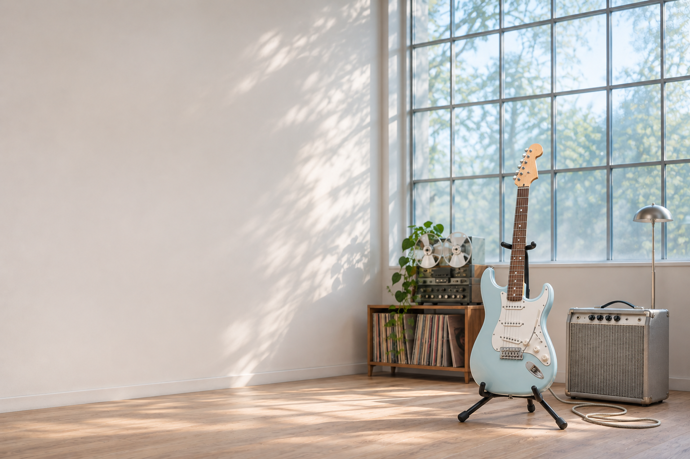
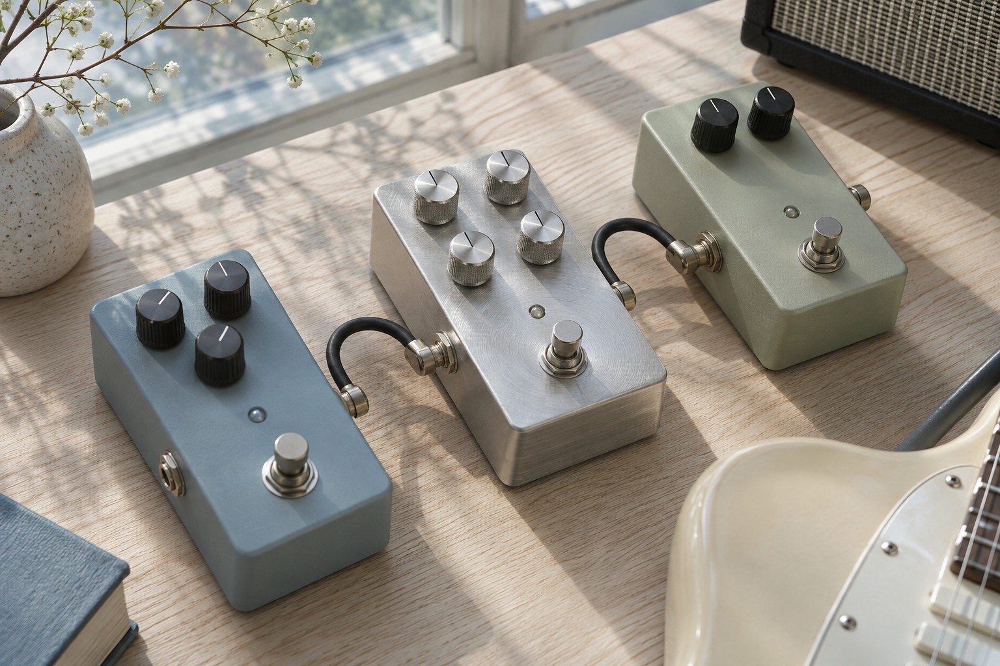
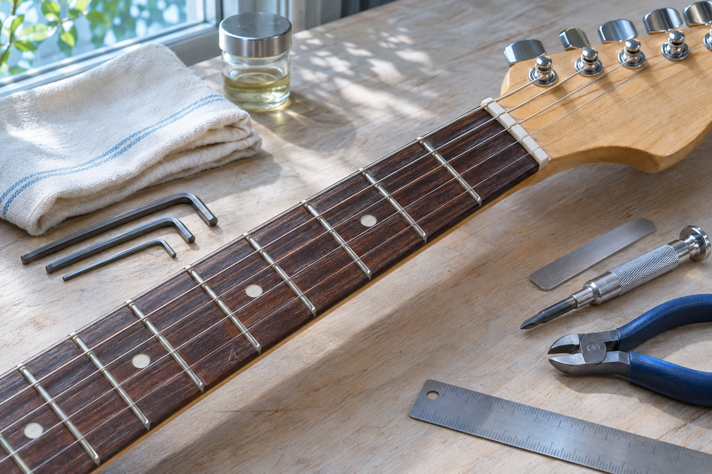

ANOTHER VIEWストラトの中へ、3D版。01 — A LITTLE ROOM FOR MUSIC.SELECTED WORK / 01—03
仕事の記録。
つないで、確かめて、使い続ける。
3つの実務から、進め方を紹介します。

業務連携・受入検証01 / CONNECTION
動かす前に、
人の判断を挟む。
入退社アカウントの発行・停止
人事への登録から3サービスへ。承認を境界に、発行・停止をつなぐ。
02 / FINDABILITY
探せること。
更新できること。
社内ポータルとAIチャット
検索の入口をまとめ、更新は担当者へ。使い続けられる社内ポータル。

データ保全・検証03 / RELIABILITY
取り出す。
そして、照合する。
旧データベースの保全
開けなくなった旧バックアップからデータを読み取り、元の件数まで確かめる。
利用数・処理件数の集計期間や対応範囲は、各実績の詳細に記載しています。
コードの生成とレビューはAI。要件を決め、受け入れを確かめ、運用するのは私。
PCやアカウントの日常運用から、社内で使う仕組みの内製まで。ここには、作ったものと、その前後で何を考え、何を確かめたかをまとめています。
- 要件定義岡田
- 設計岡田
- コード生成・コードレビューAI
- 受入検証岡田
- 本番運用岡田
社内ポータル＋AIチャットと、入退社アカウント連携は、本番運用中です。
日々の仕事にも、手を入れる。
端末の設定、集計、拠点のネットワーク。内製と運用のあいだにある仕事。
-
PCのセットアップを、PowerShellで自動化。
1台あたりの設定時間を、約90分から約18分へ。2026年上期に、約42台を設定しました。
-
27か月分の帳票
25事業所の指標帳票を、週次・月次の判断材料へ。
過去27か月分の帳票を構造化し、25事業所の経営指標を自動集計。元システムからは読み取り専用で取得し、利用者の個人情報は生成AIへ渡さない設計です。
-
10拠点の日程調整
止められる日時を、先にそろえる。
10拠点の停止可能日時を集め、ベンダーと作業日程を確定。本社回線の切替から、旧2回線の解約まで担当しました。
依頼を受けてから、決めること
「楽になった先で、何をしたいのか」を聞く。
「自動化してほしい」「楽にしたい」という相談でも、困っていることがまだ言葉になっていない場合があります。まず一緒に掘り下げて、何を解決したいのかを言葉にします。
作らない選択肢も、判断材料にする。
請求業務を内製するか検討したときは、費用と業務停止のリスクを試算しました。委託を続ける提案を出し、承認されています。作ることを、最初から結論にしないようにしています。
実装できても、現場で使えるとは限らない。
複数拠点へ朝礼のURLを配信する仕組みで、届く先の確認が漏れ、混乱を招いたことがあります。この失敗から、実装できることと現場で使えることを、分けて確かめるようにしました。
岡田 賢揮Kenki Okada
個人の公開物（GitHub）
ai-orchestrator生成AIに、計画・実装・レビュー・検証を順に進めさせる個人ツール。予算の上限を固定し、本番ブランチへ自動で取り込まない設計です。会社のシステムとは別の個人制作で、このページで紹介した業務システムのコードではありません。
GitHubの公開物を見る-
情シス・DX
アカウント・PC・ネットワークの日常運用、SaaSの比較選定、業務改善の内製と運用。
-
インフラエンジニア
Azureの権限管理、仮想デスクトップ、PC・プリンタのオンサイト運用。8名のチームで担当。
-
テクニカルサポート
モバイル製品の問い合わせに対する一次対応。
-
携帯ショップ ／ 店長
販売・操作案内を担当。店長着任後は、スタッフ10名の教育、実績・在庫管理、クレーム対応。
PLAY THE OTHER SIDE
もうひとつの
ポートフォリオ。
カメラと一緒に、ストラトの中へ。